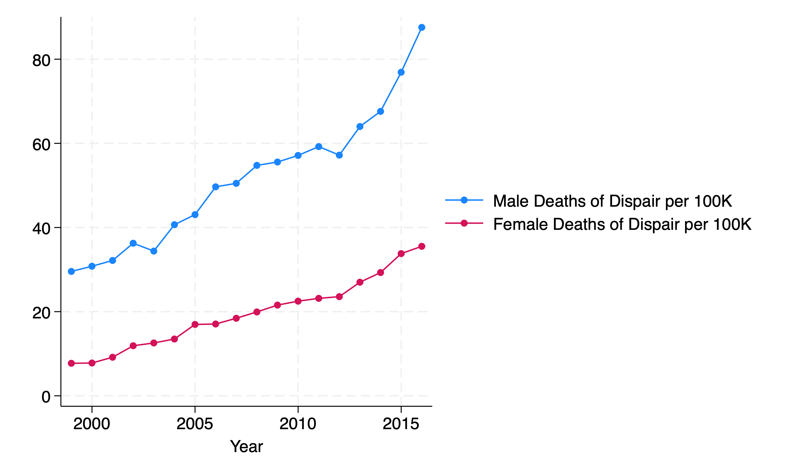
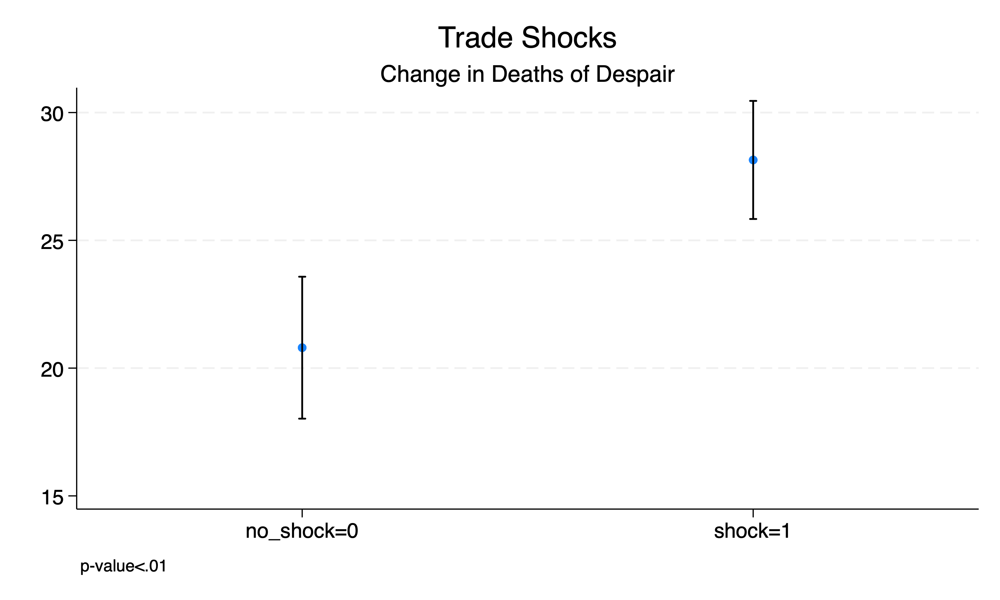
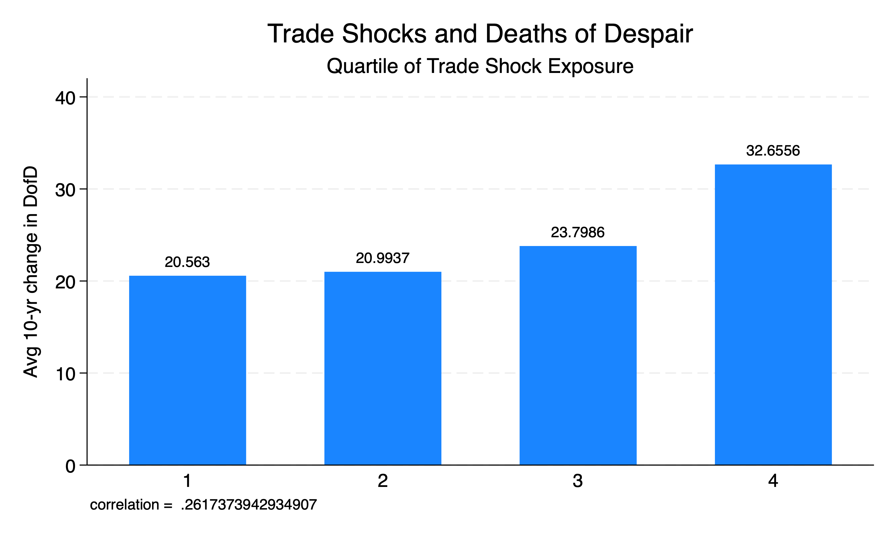
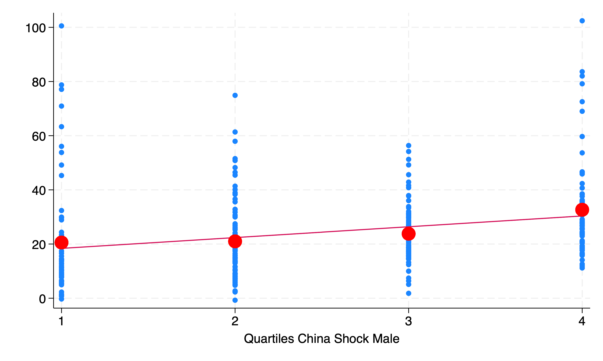

** Set Path **
cd "/Users/egong@middlebury.edu/Library/CloudStorage/Dropbox/Middlebury/Course_Archieve/Spring_2026/ECON_0111/2_Assignments/Labs/Lab_10_Reg/"ECON 111 - Lab 10: Intro to Linear Regression
Deaths of Despair
Preliminaries
Before beginning this lab, make sure you’ve:
Created a folder “Lab 10”
Downloaded the necessary data into the folder from the course site
China Trade Shocks (State-Level Policy or Treatment T)
A research program has focused on studying the impacts of the China Trade Shock. While trade has a number of benefits, the costs can be disproportionately borne by vulnerable groups (non college degree holders). A number of manufacturing jobs disappeared as a result of the trade shock, and this job loss might have resulted in what is known as “deaths of despair” where the cause of death is either suicide or accidental overdose.
The China Trade Shock data is based on Autor, Dorn, and Hanson (2019) - henceforward known as ADN.
use state_trade_shocks.dta, clear
des, fullnames
sum
Contains data from state_trade_shocks.dta
Observations: 48
Variables: 7 22 Apr 2024 10:12
-------------------------------------------------------------------------------
Variable Storage Display Value
name type format label Variable label
-------------------------------------------------------------------------------
state_fips byte %10.0g
d_impusch_p9 float %9.0g (mean) d_impusch_p9
d_impuschm_p9cen
float %9.0g (mean) d_impuschm_p9cen
import_shock byte %8.0g ==1 if China Shock
import_shock_men
byte %8.0g ==1 if China Shock Male
import_shock_q4 byte %8.0g Quartiles China Shock
import_shock_men_q4
byte %8.0g Quartiles China Shock Male
-------------------------------------------------------------------------------
Sorted by: state_fips
Variable | Obs Mean Std. dev. Min Max
-------------+---------------------------------------------------------
state_fips | 48 30.1875 15.44883 1 56
d_impusch_p9 | 48 1.104025 .6734792 .1701723 2.919809
d_impuschm~n | 48 .6087398 .3286879 .0635681 1.441842
import_shock | 48 .5 .5052912 0 1
import_sho~n | 48 .5 .5052912 0 1
-------------+---------------------------------------------------------
import_~k_q4 | 48 2.5 1.129865 1 4
import_~n_q4 | 48 2.5 1.129865 1 4The dataset contains estimates of the impact of China trade shocks to the labor market in each state. ADN also estimate the impacts of these trade shocks to labor markets that most impact male workers (i.e. manufacturing). “import_shock_men” = 1 if a state has above median impact of trade shocks on the male labor market.
CDC Mortality Data (Outcome or Y)
The CDC maintains the National Vital Statistics database that documents all births and deaths in the United States. You can access it using CDC WONDER. It can be a little difficult to use.
use CDC_DD.dta, clear
des
sum
Contains data from CDC_DD.dta
Observations: 902
Variables: 5 22 Apr 2024 10:19
-------------------------------------------------------------------------------
Variable Storage Display Value
name type format label Variable label
-------------------------------------------------------------------------------
State str20 %20s State
state_fips byte %8.0g
Year int %10.0g Year
Female_DD double %10.0g Female Deaths of Dispair per 100K
Male_DD double %10.0g Male Deaths of Dispair per 100K
-------------------------------------------------------------------------------
Sorted by:
Variable | Obs Mean Std. dev. Min Max
-------------+---------------------------------------------------------
State | 0
state_fips | 902 29.24945 15.64786 1 56
Year | 902 2007.52 5.186119 1999 2016
Female_DD | 727 24.68822 11.34114 4.7 76.16667
Male_DD | 866 57.66709 20.70184 15.4 176.2333The death rate is calculated as deaths per 100,000.
Q1 How is the CDC data different from the CPS dataset? (Hint: What is the unit of observation?)
merge m:1 state_fips using state_trade_shocks.dta
Result Number of obs
-----------------------------------------
Not matched 39
from master 39 (_merge==1)
from using 0 (_merge==2)
Matched 863 (_merge==3)
-----------------------------------------Q2 Why did we use a many-to-one merge?
Q3 Which states do we NOT have trade shock data for?
Drop states where we don’t have trade shock data.
drop if _merge==1
drop _merge(39 observations deleted)Time-Series: Deaths of Despair over Time
Since the CDC data is on a state x year, we can see how deaths of despair change over time for any state.
twoway (connected Male_DD Year, sort) (connected Female_DD Year, sort) if State=="MICHIGAN"
graph export "dd_michigan.png", replace
Do states with trade shocks have higher rates of deaths of despair?
The biggest impact of the trade shock was between 2000-2010 (based on ADN). Assuming it takes a while for labor markets to respond, we can compare death rates for years 2010 and forward.
ttest Male_DD if Year>=2010, by(import_shock_men)
Two-sample t test with equal variances
------------------------------------------------------------------------------
Group | Obs Mean Std. err. Std. dev. [95% conf. interval]
---------+--------------------------------------------------------------------
0 | 166 68.5244 1.774667 22.86498 65.02041 72.02838
1 | 168 71.90942 1.521618 19.72242 68.90534 74.91351
---------+--------------------------------------------------------------------
Combined | 334 70.22705 1.169719 21.37739 67.92608 72.52802
---------+--------------------------------------------------------------------
diff | -3.385027 2.335623 -7.979513 1.209459
------------------------------------------------------------------------------
diff = mean(0) - mean(1) t = -1.4493
H0: diff = 0 Degrees of freedom = 332
Ha: diff < 0 Ha: diff != 0 Ha: diff > 0
Pr(T < t) = 0.0741 Pr(|T| > |t|) = 0.1482 Pr(T > t) = 0.9259Q4 How do you interpret these results?
Now, one thing to consider, is that maybe states that experienced trade shocks are different than states that did not. Let’s go back to 1999, prior to the China Trade shock period.
ttest Male_DD if Year==1999, by(import_shock_men)
Two-sample t test with equal variances
------------------------------------------------------------------------------
Group | Obs Mean Std. err. Std. dev. [95% conf. interval]
---------+--------------------------------------------------------------------
0 | 22 41.23561 3.100161 14.54105 34.78847 47.68274
1 | 23 32.46087 1.071655 5.139475 30.23839 34.68335
---------+--------------------------------------------------------------------
Combined | 45 36.75074 1.724332 11.56717 33.27558 40.2259
---------+--------------------------------------------------------------------
diff | 8.774736 3.222619 2.275706 15.27377
------------------------------------------------------------------------------
diff = mean(0) - mean(1) t = 2.7229
H0: diff = 0 Degrees of freedom = 43
Ha: diff < 0 Ha: diff != 0 Ha: diff > 0
Pr(T < t) = 0.9953 Pr(|T| > |t|) = 0.0093 Pr(T > t) = 0.0047Q5: What do you notice about these results? Does it change how you might want to look at the impacts of the trade shocks on death rates?
Changes vs Levels (Outcome)
We might want to look at how deaths of despair change over time (changes), as opposed to the number in a given year (levels). First, we need to tell STATA that we have state x year data otherwise known as a “panel dataset”. The command xtset tells STATA that the unit of observation is a state state_fips by year year.
xtset state_fips Year
gen Male_DD_10yr_chg = Male_DD-L10.Male_DD
Panel variable: state_fips (unbalanced)
Time variable: Year, 1999 to 2016
Delta: 1 unit
(503 missing values generated)The second line takes the difference between the current year death rate and subtracts the death rate 10 years ago L10. The L prefix is known as a “lag” and we can vary how many lags we want.
Q6: Generate a 7 year change in male deaths of despair.
Now we can do a t-test looking at changes in the death rate as opposed to levels.
ttest Male_DD_10yr_chg if Year>=2010, by(import_shock_men)
Two-sample t test with equal variances
------------------------------------------------------------------------------
Group | Obs Mean Std. err. Std. dev. [95% conf. interval]
---------+--------------------------------------------------------------------
0 | 153 20.79946 1.416798 17.52483 18.0003 23.59862
1 | 163 28.1456 1.178933 15.05161 25.81755 30.47366
---------+--------------------------------------------------------------------
Combined | 316 24.58877 .9383363 16.68023 22.74257 26.43496
---------+--------------------------------------------------------------------
diff | -7.346148 1.834337 -10.95529 -3.737003
------------------------------------------------------------------------------
diff = mean(0) - mean(1) t = -4.0048
H0: diff = 0 Degrees of freedom = 314
Ha: diff < 0 Ha: diff != 0 Ha: diff > 0
Pr(T < t) = 0.0000 Pr(|T| > |t|) = 0.0001 Pr(T > t) = 1.0000Q7: How do you interpret the sample means? The difference?
We can also look at the correlation between changes in death rates and trade shocks.
correlate Male_DD_10yr_chg import_shock_men if Year>=2010(obs=316)
| Male_D~g import~n
-------------+------------------
Male_DD_10~g | 1.0000
import_sho~n | 0.2204 1.0000
The “.2204” is the correlation coefficient. It is positive so states that have a trade shock (T=1) are more likely to have an increase in deaths of despair. This is how t-tests and correlation is connected. If Group = 1 has a higher sample mean than Group = 0, than the correlation should be positive between the two variables.
Linear Regression
Let’s do a t-test and then a linear regression. The regression command is reg followed by the outcome (Y=Deaths) and then the treatment (T=1 if state has trade shock).
ttest Male_DD_10yr_chg if Year>=2010, by(import_shock_men)
reg Male_DD_10yr_chg import_shock_men if Year>=2010
Two-sample t test with equal variances
------------------------------------------------------------------------------
Group | Obs Mean Std. err. Std. dev. [95% conf. interval]
---------+--------------------------------------------------------------------
0 | 153 20.79946 1.416798 17.52483 18.0003 23.59862
1 | 163 28.1456 1.178933 15.05161 25.81755 30.47366
---------+--------------------------------------------------------------------
Combined | 316 24.58877 .9383363 16.68023 22.74257 26.43496
---------+--------------------------------------------------------------------
diff | -7.346148 1.834337 -10.95529 -3.737003
------------------------------------------------------------------------------
diff = mean(0) - mean(1) t = -4.0048
H0: diff = 0 Degrees of freedom = 314
Ha: diff < 0 Ha: diff != 0 Ha: diff > 0
Pr(T < t) = 0.0000 Pr(|T| > |t|) = 0.0001 Pr(T > t) = 1.0000
Source | SS df MS Number of obs = 316
-------------+---------------------------------- F(1, 314) = 16.04
Model | 4259.0358 1 4259.0358 Prob > F = 0.0001
Residual | 83383.4386 314 265.552352 R-squared = 0.0486
-------------+---------------------------------- Adj R-squared = 0.0456
Total | 87642.4744 315 278.230077 Root MSE = 16.296
------------------------------------------------------------------------------
Male_DD_10~g | Coefficient Std. err. t P>|t| [95% conf. interval]
-------------+----------------------------------------------------------------
import_sho~n | 7.346148 1.834337 4.00 0.000 3.737003 10.95529
_cons | 20.79946 1.317435 15.79 0.000 18.20734 23.39157
------------------------------------------------------------------------------Q8: What are the similarities and differences between the t-test and the linear regression?
The means of changes in deaths of despair with 95% CI are plotted in the following figure.

Q9: Draw a line that connects the means. How is this line connected to the t-test and the linear regression?
Note that Male_DD_10yr_chg (Y) is continuous while import_shock_men (T) is discrete and only takes two values. This makes a t-test straightforward. But what happens if the treatment takes more than two values? For example, “import_shock_men_q4” is a variable that takes four values corresponding to the quartiles of shock exposure. When import_shock_men_q4=1, these states have minimal exposure to the trade shock. As import_shock_men_q4 increases, the more exposure a state has to the trade shock, with values of 4 being in the highest quartile (and most impacted).
tab import_shock_men
tab import_shock_men_q4
==1 if |
China Shock |
Male | Freq. Percent Cum.
------------+-----------------------------------
0 | 431 49.94 49.94
1 | 432 50.06 100.00
------------+-----------------------------------
Total | 863 100.00
Quartiles |
China Shock |
Male | Freq. Percent Cum.
------------+-----------------------------------
1 | 215 24.91 24.91
2 | 216 25.03 49.94
3 | 216 25.03 74.97
4 | 216 25.03 100.00
------------+-----------------------------------
Total | 863 100.00Q10: Which states had the greatest impact to China trade shocks based on import_shock_men_q4?
Let’s look at the correlation between deaths of despair and shocks using quantiles.
correlate Male_DD_10yr_chg import_shock_men_q4 if Year>=2010
return list
scalar rho = r(rho)
scalar list(obs=316)
| Male_D~g imp~n_q4
-------------+------------------
Male_DD_10~g | 1.0000
import_~n_q4 | 0.2617 1.0000
scalars:
r(N) = 316
r(rho) = .2617373942934907
matrices:
r(C) : 2 x 2
rho = .26173739Now we can visualize this association as well and include the correlation.
graph bar (mean) Male_DD_10yr_chg if Year>=2010 , over(import_shock_men_q4) blabel(bar) title(Trade Shocks and Deaths of Despair) subtitle(Quartile of Trade Shock Exposure) ytitle(Avg 10-yr change in DofD) note("correlation = `=rho'")
graph export "bar_DD_shocksq4.png", replace
It’s not so clear on how you do a t-test using “import_shock_men_q4”. Linear regression is helpful in this situation. It allows for the treatment to take multiple values.
reg Male_DD_10yr_chg import_shock_men_q4 if Year>=2010
Source | SS df MS Number of obs = 316
-------------+---------------------------------- F(1, 314) = 23.09
Model | 6004.07598 1 6004.07598 Prob > F = 0.0000
Residual | 81638.3984 314 259.994899 R-squared = 0.0685
-------------+---------------------------------- Adj R-squared = 0.0655
Total | 87642.4744 315 278.230077 Root MSE = 16.124
------------------------------------------------------------------------------
Male_DD_10~g | Coefficient Std. err. t P>|t| [95% conf. interval]
-------------+----------------------------------------------------------------
import_~n_q4 | 3.995025 .8313404 4.81 0.000 2.359324 5.630727
_cons | 14.39892 2.306307 6.24 0.000 9.861154 18.93669
------------------------------------------------------------------------------Q11: Based on what we’ve covered so far, how do you interpret the results from the linear regression?
* Creates Mean for each trade shock quartile to use for scatterplot
egen Male_DD_10yr_chg_mean =mean(Male_DD_10yr_chg) if Year>=2010, by(import_shock_men_q4)
twoway (scatter Male_DD_10yr_chg import_shock_men_q4) (lfit Male_DD_10yr_chg import_shock_men_q4) ///
(scatter Male_DD_10yr_chg_mean import_shock_men_q4, sort mcolor(red) msize(11-pt) msymbol(circle)) if Year>=2010, legend(off)
graph export "scatter_DD_shocksq4.png", replace